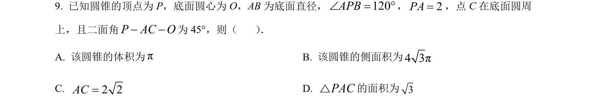
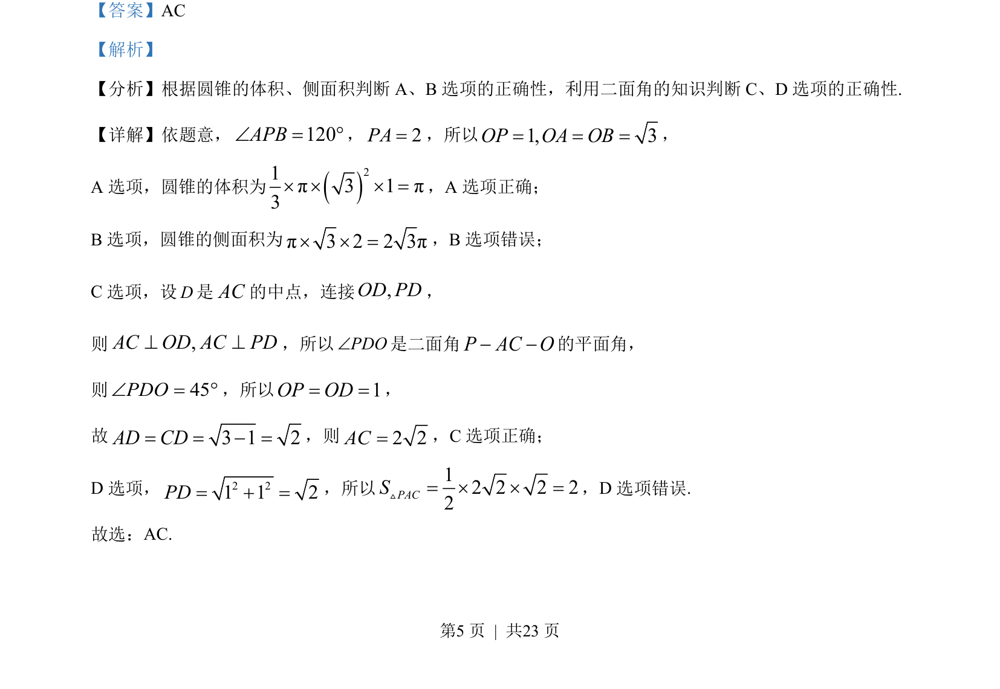
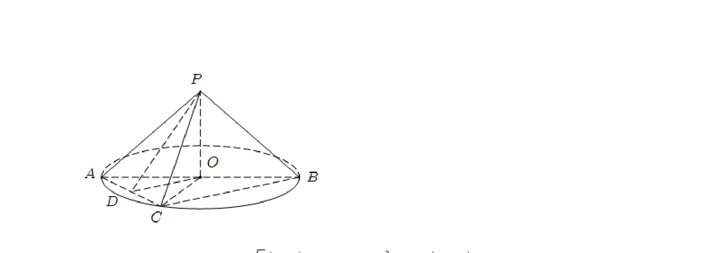

考点：圆锥体积 圆锥侧面积 二面角

考查圆锥的体积、侧面积计算及二面角的判断与应用。


📄 原 PDF 第 5 页：
素材/真题/吉林/2008-2024·（吉林）数学高考真题/2023年高考数学试卷（新课标Ⅱ卷）（解析卷）.pdf
【答案】AC 【解析】 【分析】根据圆锥的体积、侧面积判断 A、B选项的正确性，利用二面角的知识判断 C、D 选项的正确性. 【详解】依题意，120APBÐ = °，2PA=，所以1, 3OP OA OB= = =， A 选项，圆锥的体积为()21π3 1π3´ ´ ´ =，A 选项正确； B选项，圆锥的侧面积为π3 2 2 3π´ ´ =，B选项错误； C选项，设D是AC的中点，连接,OD PD， 则 ,AC OD AC PD^ ^，所以PDOÐ是二面角P AC O− −的平面角， 则 45PDOÐ = °，所以 1OP OD= =， 故 3 1 2AD CD= = − =，则2 2AC=，C选项正确； D 选项， 2 21 1 2PD= + =，所以12 2 2 22PACS= ´ ´ =V，D 选项错误. 故选：AC.